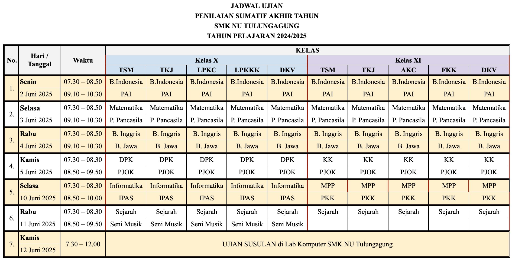

PENILAIAN SUMATIF AKHIR TAHUN (PSAT)
Ujian Utama PSAT dilaksanakan pada 2 Juni 2025 sampai dengan 12 Juni 2025 .
Perangkat Soal dikumpulkan pada Laman yang sudah ditentukan di bawah paling akhir 22 Mei 2025 .
Perangkat soal berisi (nama folder= nama mapel dan tingkat kelas):
- Kisi-Kisi Soal.docx
- Kartu Soal.docx
- Naskah Soal.docx
- Kunci Soal.docx
Download File Sosialisasi PSAT
Silahkan download sesuai keterangan di bawah ini:
PENYUSUN SOAL
Tim Penyusun Perangkat Soal
KRITERIA SOAL
Kriteria materi dan bobot soal
FORMAT PENULISAN
Format Penulisan Soal PSAT
UPLOAD PERANGKAT SOAL
Pengumpulan Perangkat Soal PSAT
